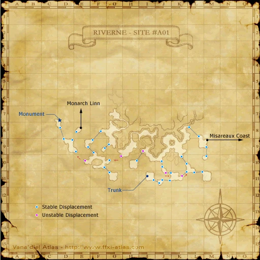

Description
Riverne - Site #A01 is a dungeon in Tavnazian Archipelago.
Map

Involved in Quests / Missions
| Quest / Mission | Type | Starter | Location |
|---|---|---|---|
| Confessions of a Bellmaker | General | --- | Riverne - Site #A01 (C-7) |
| Fly High | General | Ferchinne | Tavnazian Safehold (G-9) |
| Spice Gals | General | Rouva | Southern San d'Oria (I-8) |
| The Search for Goldmane | General | Zoriboh | Rabao (F-6/7) |
Notorious Monsters
| Name | Level | Drops | Steal | Family | Spawns | Notes |
|---|---|---|---|---|---|---|
| Aiatar | — | Falconer's Hose Sable Cuisses | — |  WyvernsImage source WyvernsImage source | — | — |
| Carmine Dobsonfly | — | Dobson Bandana Jaeger Ring Voyager Sallet | — |  FliesImage source FliesImage source | — | Respawn: 21-24hr |
| Heliodromos | — | Mountain Gaiters Hippogryph Tailfeather | — |  HippogryphsImage source HippogryphsImage source | — | — |
| Shieldtrap | — | Flytrap Leaf Sennight Bangles | — |  FlytrapsImage source FlytrapsImage source | — | — |
Regular Monsters
| Name | Level | Drops | Steal | Family | Spawns | Notes |
|---|---|---|---|---|---|---|
 Air ElementalImage source Air ElementalImage source | 47-54 | Wind Cluster | — | Elementals | 4 | During wind weather; A, M |
| Atomic Cluster | 45-48 | Cluster Ash Cluster Core Clustered Tar | Cluster Core |  ClustersImage source ClustersImage source | 20 | A, S, M |
| Cloud Hippogryph | 45-47 | Hippogryph Feather Hippogryph Tailfeather | — | HippogryphsImage source | 15 | A, T(S) |
| Darner | 84+ | — | — | FliesImage source | ? | Pos:(G-8/9) |
| Firedrake | 41-43 | Giant Scale Wyvern Skin Wyvern Wing | — | WyvernsImage source | 18 | A, S, L |
| Flamedrake | 48-50 | Giant Scale Wyvern Skin Wyvern Wing | — | WyvernsImage source | 7 | A, S |
| Hawker | 45-48 | — | — | FliesImage source | 27 | L, H |
| Hawkertrap | 38-42 | Flytrap Leaf | — | FlytrapsImage source | 44 | H |
| Hippogryph | 40-42 | Hippogryph Tailfeather | — | HippogryphsImage source | 26 | A, T(S) |
| Riverne Vulture | 39-42 | Bird Egg Bird Feather Copper Key | Bird Feather |  BirdsImage source BirdsImage source | 32 | H |
 Thunder ElementalImage source Thunder ElementalImage source | 47-54 | Lightning Cluster | — | Elementals | 4 | During lightning weather; A, M |
Event Monsters
| Name | Level | Drops | Steal | Family | Spawns | Notes |
|---|---|---|---|---|---|---|
| Arcane Phantasm | — | — | — |  FomorsImage source FomorsImage source | 1 | Spawned Quest: Confessions of a Bellmaker |
| Ouryu | — | — | — |  WyrmsImage source WyrmsImage source | 1 | Spawned BCNM: Ouryu Cometh |
 Earth ElementalImage source Earth ElementalImage source | — | — | — | Elementals | 1 | Spawned BCNM: Ouryu Cometh; Assists: Ouryu; A, T(M) |
 Water ElementalImage source Water ElementalImage source | — | — | — | Elementals | 1 | Spawned BCNM: Ouryu Cometh; Assists: Ouryu; A, T(M) |
| Ziryu | — | — | — |  WormsImage source WormsImage source | 1 | Spawned BCNM: Ouryu Cometh; Assists: Ouryu; A, L, T(H) |
Story walkthroughs in this area
| Story | Mission / quest |
|---|---|
| CoP 2-4 | An Eternal Melody |
| CoP 2-5 | Ancient Vows |
References
External references describe their own server or retail rules. Documented Zenith changes take precedence.
Map credits: Map 1 — HorizonXI Wiki. Original game maps © SQUARE ENIX; redrawn maps retain the credited authorship and license.